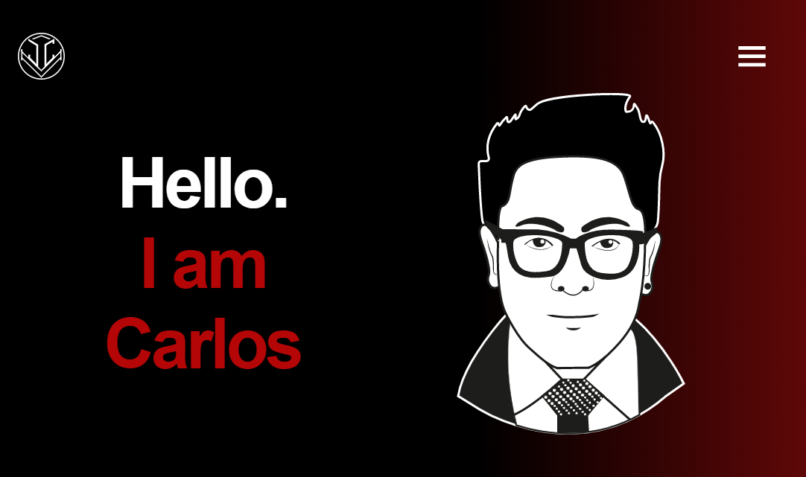

Mi Portafolio || Html, Css, Sass, Js || JC
1.000.000 visualizaciones Fecha de estreno: 18 feb 2022
21.000
No me gusta
Compartir
Descargar
Comentarios
Es un proyecto de YouTube, donde consumimos un API de peliculas de la pagina TMDB, este proyecto fue desarrollada con las tecnologias de Html, Css, Saas y Js
100 Comentarios
Mis Retos de FrontendMentor || Clon FontendMenotr || Html, Css, Sass, Js || JC
JC
10.000 visualizaciones